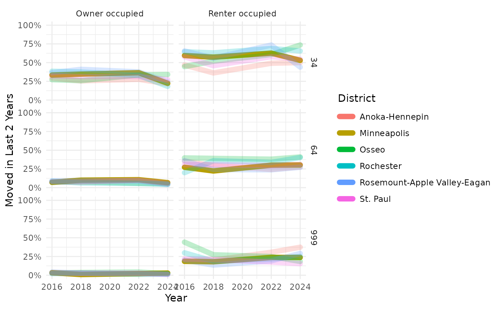
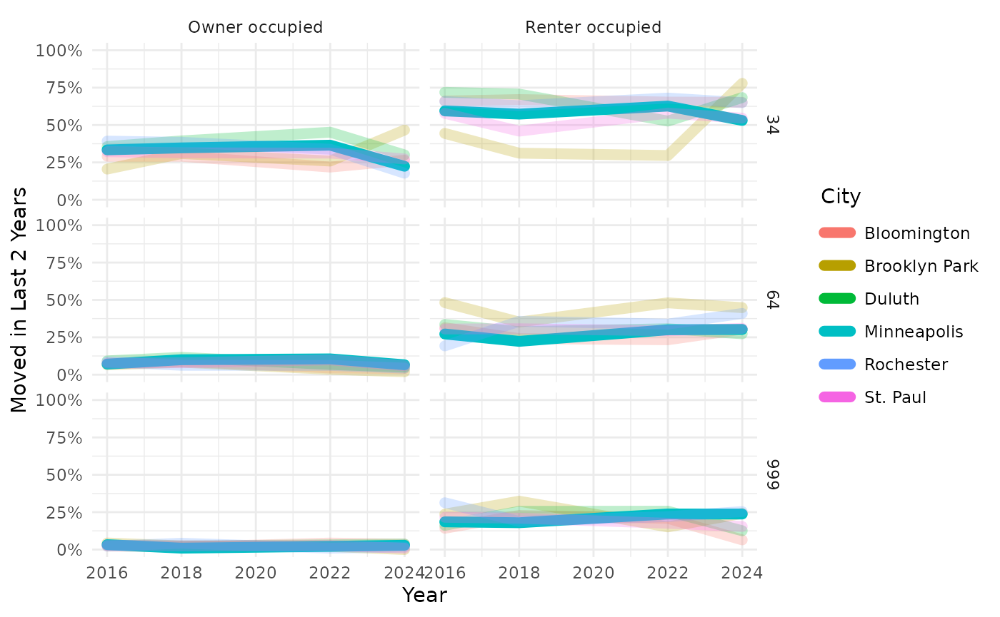
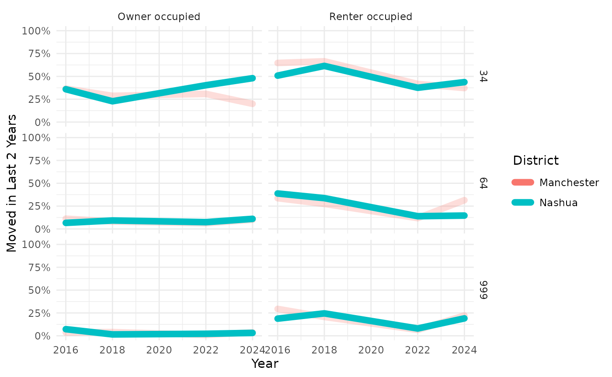
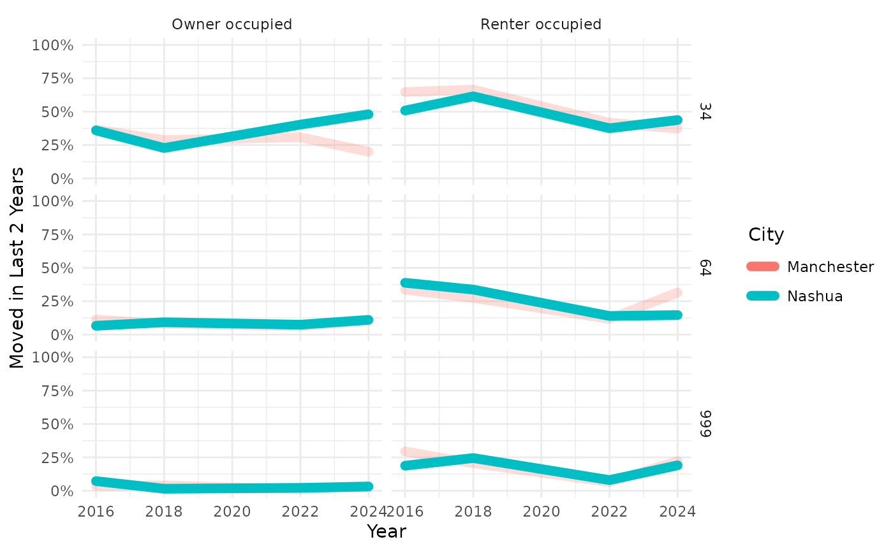
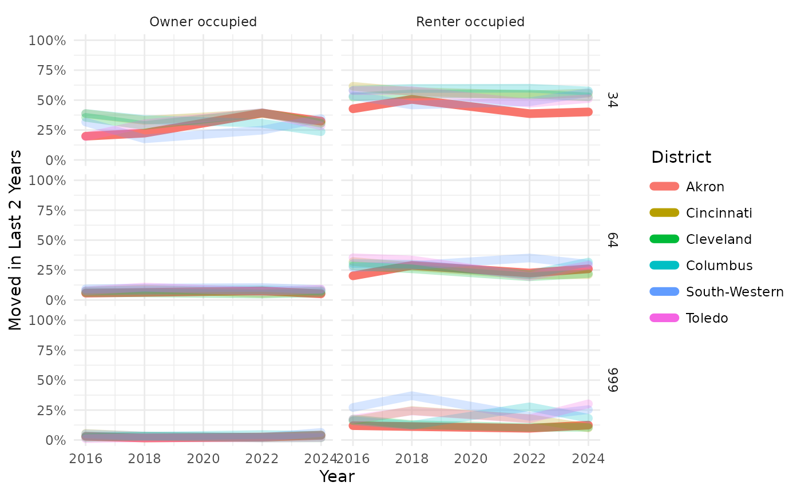
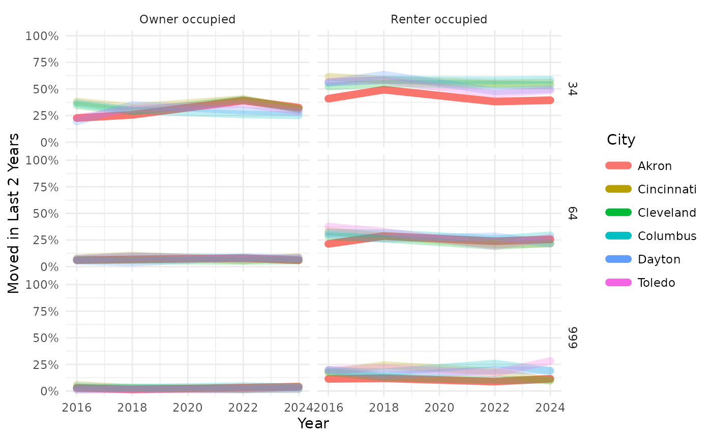
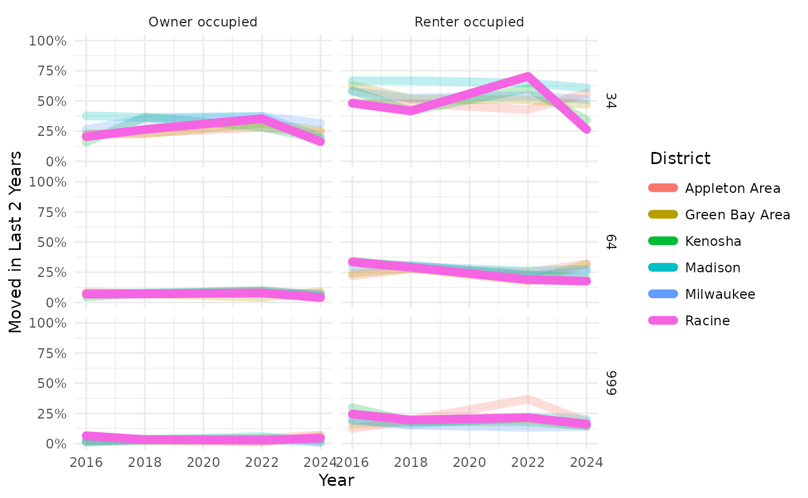
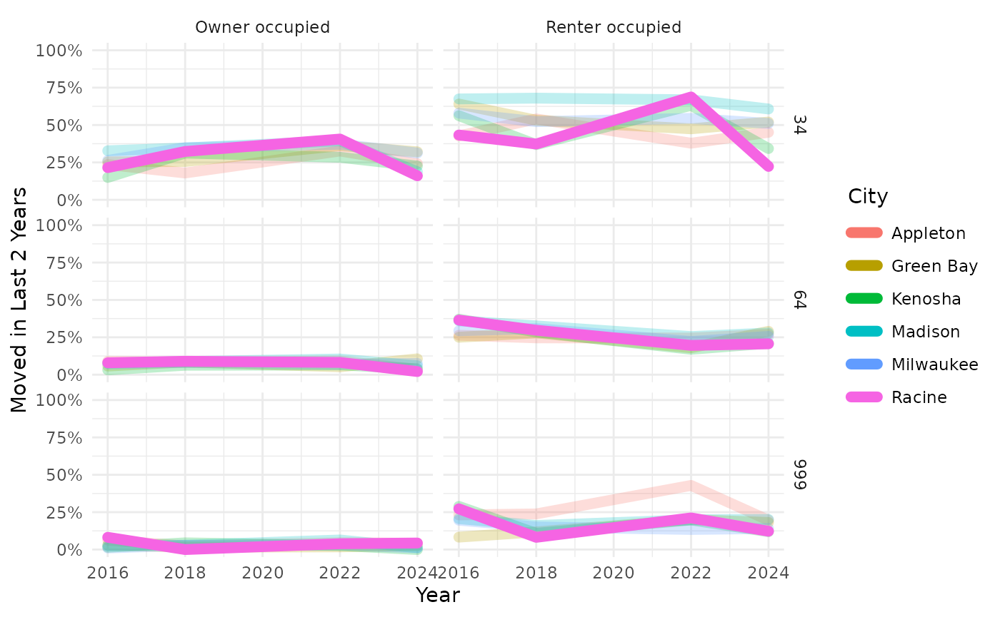

Documenting Tenure, Age, and Years Living in Current Residence
documenting_tenure_and_age.RmdSome of the many things that The American Housing Survey reports about are the age of the householder, whether they rent or own their residence, and how many years they have lived there.
This example considers how those factors interact. It was motivated by interest in how often families with children at Racine Unified School District have to move between schools. Racine’s decision-makers are particularly interested in understanding how renting might impact student mobility.
Setup
The data come from ACS table “B25128”.
| Group | Index | Variable | Tenure | Lower Age | Upper Age | Shortest Duration | Longest Duration |
|---|---|---|---|---|---|---|---|
| B25128 | 4 | B25128_004E | Owner occupied | 15 | 34 | 0 | 1 |
| B25128 | 5 | B25128_005E | Owner occupied | 15 | 34 | 2 | 4 |
| B25128 | 6 | B25128_006E | Owner occupied | 15 | 34 | 5 | 12 |
| B25128 | 7 | B25128_007E | Owner occupied | 15 | 34 | 13 | 22 |
| B25128 | 8 | B25128_008E | Owner occupied | 15 | 34 | 23 | 32 |
| B25128 | 9 | B25128_009E | Owner occupied | 15 | 34 | 33 | 232 |
| B25128 | 11 | B25128_011E | Owner occupied | 35 | 64 | 0 | 1 |
| B25128 | 12 | B25128_012E | Owner occupied | 35 | 64 | 2 | 4 |
| B25128 | 13 | B25128_013E | Owner occupied | 35 | 64 | 5 | 12 |
| B25128 | 14 | B25128_014E | Owner occupied | 35 | 64 | 13 | 22 |
| B25128 | 15 | B25128_015E | Owner occupied | 35 | 64 | 23 | 32 |
| B25128 | 16 | B25128_016E | Owner occupied | 35 | 64 | 33 | 232 |
| B25128 | 18 | B25128_018E | Owner occupied | 65 | 999 | 0 | 1 |
| B25128 | 19 | B25128_019E | Owner occupied | 65 | 999 | 2 | 4 |
| B25128 | 20 | B25128_020E | Owner occupied | 65 | 999 | 5 | 12 |
| B25128 | 21 | B25128_021E | Owner occupied | 65 | 999 | 13 | 22 |
| B25128 | 22 | B25128_022E | Owner occupied | 65 | 999 | 23 | 32 |
| B25128 | 23 | B25128_023E | Owner occupied | 65 | 999 | 33 | 232 |
| B25128 | 26 | B25128_026E | Renter occupied | 15 | 34 | 0 | 1 |
| B25128 | 27 | B25128_027E | Renter occupied | 15 | 34 | 2 | 4 |
| B25128 | 28 | B25128_028E | Renter occupied | 15 | 34 | 5 | 12 |
| B25128 | 29 | B25128_029E | Renter occupied | 15 | 34 | 13 | 22 |
| B25128 | 30 | B25128_030E | Renter occupied | 15 | 34 | 23 | 32 |
| B25128 | 31 | B25128_031E | Renter occupied | 15 | 34 | 33 | 232 |
| B25128 | 33 | B25128_033E | Renter occupied | 35 | 64 | 0 | 1 |
| B25128 | 34 | B25128_034E | Renter occupied | 35 | 64 | 2 | 4 |
| B25128 | 35 | B25128_035E | Renter occupied | 35 | 64 | 5 | 12 |
| B25128 | 36 | B25128_036E | Renter occupied | 35 | 64 | 13 | 22 |
| B25128 | 37 | B25128_037E | Renter occupied | 35 | 64 | 23 | 32 |
| B25128 | 38 | B25128_038E | Renter occupied | 35 | 64 | 33 | 232 |
| B25128 | 40 | B25128_040E | Renter occupied | 65 | 999 | 0 | 1 |
| B25128 | 41 | B25128_041E | Renter occupied | 65 | 999 | 2 | 4 |
| B25128 | 42 | B25128_042E | Renter occupied | 65 | 999 | 5 | 12 |
| B25128 | 43 | B25128_043E | Renter occupied | 65 | 999 | 13 | 22 |
| B25128 | 44 | B25128_044E | Renter occupied | 65 | 999 | 23 | 32 |
| B25128 | 45 | B25128_045E | Renter occupied | 65 | 999 | 33 | 232 |
Here are the settings needed for pulling data for four different states. For each state, we will look at the 6 largest ones in the state, focusing on one in particular from that subset.
| FIPS | State | Focus | Product | Geography | Label |
|---|---|---|---|---|---|
| 27 | Minnesota | Minneapolis | acs1 | school district (unified) | District |
| 27 | Minnesota | Minneapolis | acs1 | place | City |
| 33 | New Hampshire | Nashua | acs1 | school district (unified) | District |
| 33 | New Hampshire | Nashua | acs1 | place | City |
| 39 | Ohio | Akron | acs1 | school district (unified) | District |
| 39 | Ohio | Akron | acs1 | place | City |
| 55 | Wisconsin | Racine | acs1 | school district (unified) | District |
| 55 | Wisconsin | Racine | acs1 | place | City |
If a household has moved in the last 2 years then it counts as a recent move.
Note that the AHS takes place on odd-numbered years. That means that ACS data based on the AHS from even-numbered years are not actually comparable with data from odd-numbered years. Accordingly, this example only pulls ACS data from even-numbered years. The current format of the AHS began in 2015, so this example only pulls data from 2016 and later.
MOST_RECENT_ACS_YEAR <- hercacstables::most_recent_vintage("acs", "acs1")
ACS_YEARS <- seq(2016, MOST_RECENT_ACS_YEAR, 2)Fetch data
While the data always come from the same table, we will be querying the API many times – twice for each combination of survey year, geography, and state. We could make fewer API calls per year if we downloaded data for EVERY state each time, rather than a separate call for each state. I have not profiled whether it is faster to do more small data pulls or fewer lange data pulls.
There are two functions for fetching data.
Function to Fetch Housing Data
Here is the function for pulling counts of households by the age of the householder, whether or not they rent, and how recently they moved in.
fetch_tenure_durations <- function(Product, Geography, FIPS) {
.years <- ACS_YEARS
if (Product == "acs1") {
.years <- .years[.years != 2020]
}
.years |>
purrr::map(
\(.year) hercacstables::fetch_data(
hercacstables::GLOSSARY_OF_TENURE_DURATIONS_BY_AGE$Variable,
year = .year,
survey_type = "acs",
table_or_survey_code = Product,
for_geo = Geography,
for_items = "*",
state = FIPS
)
) |>
purrr::list_rbind()
}Function to Fetch Populations and Names
Here is the function for pulling the names and populations of geographic units in a state. We will use these data to identify the largest units in each state. Those are the units that we will use for comparison.
fetch_names_and_sizes <- function(Product, Geography, FIPS) {
hercacstables::fetch_data(
c("NAME", "B01001_001E"),
year = MOST_RECENT_ACS_YEAR,
for_geo = Geography,
for_items = "*",
survey_type = "acs",
table_or_survey_code = Product,
state = FIPS
)
}Wrangle the Data
As always, there is a little aggregation to do with the data once we have pulled what the ACS reports. There are some computations to do for both types of data that we fetched.
Define a Function to Wrangle Household Data
We will lump together the different durations of residency into two categories: those who moved recently and those who have not.
wrangle_tenure_duration <- function(Durations, Geography) {
Durations |>
dplyr::inner_join(
hercacstables::GLOSSARY_OF_TENURE_DURATIONS_BY_AGE,
by = c("Group", "Index")
) |>
dplyr::summarize(
Households = sum(.data$Value, na.rm = TRUE),
`Recent Movers` = sum(
.data$Value * (.data$`Longest Duration` < DISPLACEMENT_WINDOW),
na.rm = TRUE
),
`Recent Move Rate` = .data$`Recent Movers` / .data$Households,
.by = tidyselect::all_of(c(
"Year",
Geography,
"Tenure",
"Upper Age"
))
)
}Define a Function to Find the Largest Geographic Units
The full lists of geographic units from each state also need adjustments. First, we simplify the names by removing redundant features like the state’s name and words like “school district.” Next, we identify which row corresponds to the focal geographic unit. Finally, we pare down the number of columns to a useful minimum.
wrangle_names_and_sizes <- function(Populations, Geography, Focus, Label) {
Populations |>
dplyr::mutate(
"{Label}" := .data$NAME |>
stringr::str_extract(
"[^,]+"
) |>
stringr::str_remove_all(
stringr::regex("city|metropolitan|municipal|district|public|schools?",
ignore_case = TRUE)
) |>
stringr::str_squish(),
Focal = stringr::str_detect(.data[[Label]], Focus)
) |>
dplyr::select(
tidyselect::all_of(c(
Label,
Geography,
"Focal",
Population = "Value"
))
) |>
dplyr::slice_max(
.data$Population,
n = NUMBER_OF_BIG_UNITS
)
}Apply the Wrangling Functions
Once again, we apply the wrangling functions to each row of the raw data. Once the duration and population data are wrangled, we join them into the final data sets that we actually want to use.
WRANGLED <- dplyr::mutate(
RAW,
TenureDuration = purrr::pmap(
dplyr::pick("Durations", "Geography"),
wrangle_tenure_duration
),
LargePlaces = purrr::pmap(
dplyr::pick("Populations", "Geography", "Focus", "Label"),
wrangle_names_and_sizes
),
BigTenure = purrr::pmap(
dplyr::pick("TenureDuration", "LargePlaces", "Geography"),
\(TenureDuration, LargePlaces, Geography) {
TenureDuration |>
dplyr::inner_join(
LargePlaces,
by = Geography
) |>
dplyr::arrange(
dplyr::across(tidyselect::all_of(Geography))
)
}
)
)Summarize the Findings
Finally, we make some pretty tables and plots to display the results of all of that wrangling.
Define the Tabulation Function
This function makes a table where each cell shows both the percent recently moved and the number of households in each combination of place and year.
tabulate_tenure_durations <- function(BigTenure, Label) {
nyears <- length(unique(BigTenure$Year))
BigTenure |>
dplyr::summarize(
`Recent Move Rate` = weighted.mean(
.data$`Recent Move Rate`,
.data$Households
),
Households = sum(.data$Households),
.by = tidyselect::all_of(c("Year", Label, "Tenure"))
) |>
dplyr::mutate(
dplyr::across("Recent Move Rate",
scales::label_percent(accuracy = 1)),
dplyr::across("Households",
scales::label_comma(accuracy = 1)),
Text = sprintf("%s of %s",
.data$`Recent Move Rate`,
.data$Households)
) |>
dplyr::select(
tidyselect::all_of(c("Year", Label, "Tenure", "Text"))
) |>
tidyr::pivot_wider(
names_from = "Year",
names_sort = TRUE,
values_from = "Text",
values_fill = ""
) |>
dplyr::arrange(
dplyr::across(tidyselect::all_of(c(Label, "Tenure")))
) |>
knitr::kable(
caption = "Households that Have Recently Moved",
align = paste0(c("l", rep("r", nyears)),
collapse = "")
)
}Define the Plotting Function
This function makes line plots that show change in percentage recently moved over time, with line colors by geographic unit and panels for each combination of householder age and tenure.
plot_tenure_duration <- function(BigTenure, Label) {
BigTenure |>
ggplot2::ggplot(
ggplot2::aes(x = .data$Year,
y = .data$`Recent Move Rate`,
color = .data[[Label]],
group = .data[[Label]],
alpha = .data$Focal)
) +
ggplot2::geom_line(
linewidth = 8.0 / 3.0,
lineend = "round",
linejoin = "round",
na.rm = TRUE
) +
ggplot2::scale_x_continuous(
breaks = scales::breaks_width(2),
minor_breaks = scales::breaks_width(1L),
labels = scales::label_number(accuracy = 1,
big.mark = "")
) +
ggplot2::scale_y_continuous(
name = paste("Moved in Last",
DISPLACEMENT_WINDOW,
"Years"),
limits = c(0, 1),
labels = scales::label_percent(accuracy = 1)
) +
ggplot2::scale_alpha_manual(
values = c(
`TRUE` = 1,
`FALSE` = 0.25
),
guide = ggplot2::guide_none()
) +
ggplot2::facet_grid(
rows = ggplot2::vars(.data$`Upper Age`),
cols = ggplot2::vars(.data$Tenure)
) +
ggplot2::theme_minimal()
}Results
Here’s what all of that prep creates:
SUMMARIZED |>
tidyr::nest(
.by = c("FIPS", "State", "Focus"),
.key = "Results"
) |>
purrr::pwalk(
\(FIPS, State, Focus, Results) {
cat(paste0("## ", Focus, ", ", State, "\n\n"))
Results |>
dplyr::select(
"Label", "Table", "Plot"
) |>
purrr::pwalk(
\(Label, Table, Plot) {
cat("###", Label, "\n\n")
print(Table)
cat("\n\n")
print(Plot)
cat("\n\n")
}
)
}
)Minneapolis, Minnesota
District
| District | Tenure | 2016 | 2018 | 2022 | 2024 |
|---|---|---|---|---|---|
| Anoka-Hennepin | Owner occupied | 10% of 69,363 | 9% of 70,857 | 10% of 76,541 | 7% of 76,830 |
| Anoka-Hennepin | Renter occupied | 36% of 17,190 | 30% of 16,606 | 34% of 15,629 | 36% of 17,225 |
| Minneapolis | Owner occupied | 10% of 80,243 | 13% of 83,540 | 13% of 92,192 | 8% of 90,363 |
| Minneapolis | Renter occupied | 42% of 91,663 | 39% of 91,580 | 47% of 101,502 | 41% of 104,117 |
| Osseo | Owner occupied | 9% of 39,795 | 9% of 44,118 | 9% of 41,661 | 8% of 43,183 |
| Osseo | Renter occupied | 42% of 13,561 | 42% of 12,007 | 40% of 15,579 | 46% of 14,910 |
| Rochester | Owner occupied | 12% of 37,135 | 10% of 35,818 | 9% of 38,641 | 5% of 38,788 |
| Rochester | Renter occupied | 42% of 14,569 | 44% of 18,011 | 48% of 19,266 | 50% of 18,616 |
| Rosemount-Apple Valley-Eagan | Owner occupied | 11% of 45,075 | 11% of 45,476 | 10% of 45,995 | 5% of 49,801 |
| Rosemount-Apple Valley-Eagan | Renter occupied | 45% of 11,908 | 35% of 11,728 | 45% of 16,418 | 33% of 13,988 |
| St. Paul | Owner occupied | 10% of 56,236 | 10% of 57,137 | 11% of 68,098 | 8% of 63,986 |
| St. Paul | Renter occupied | 41% of 56,567 | 36% of 58,721 | 41% of 58,556 | 38% of 64,586 |

City
| City | Tenure | 2016 | 2018 | 2022 | 2024 |
|---|---|---|---|---|---|
| Bloomington | Owner occupied | 8% of 23,876 | 8% of 23,470 | 6% of 26,263 | 6% of 24,842 |
| Bloomington | Renter occupied | 39% of 12,990 | 36% of 12,541 | 39% of 12,941 | 35% of 14,044 |
| Brooklyn Park | Owner occupied | 8% of 19,175 | 10% of 19,258 | 6% of 22,243 | 7% of 21,290 |
| Brooklyn Park | Renter occupied | 45% of 8,536 | 33% of 8,572 | 35% of 8,566 | 51% of 8,368 |
| Duluth | Owner occupied | 11% of 21,225 | 12% of 22,075 | 11% of 22,650 | 8% of 22,584 |
| Duluth | Renter occupied | 48% of 13,912 | 47% of 14,123 | 40% of 15,954 | 48% of 16,792 |
| Minneapolis | Owner occupied | 10% of 80,243 | 13% of 83,653 | 13% of 92,192 | 8% of 90,363 |
| Minneapolis | Renter occupied | 42% of 91,663 | 39% of 91,580 | 47% of 101,502 | 41% of 104,117 |
| Rochester | Owner occupied | 13% of 32,325 | 11% of 31,471 | 10% of 33,837 | 5% of 33,955 |
| Rochester | Renter occupied | 42% of 14,153 | 44% of 17,890 | 47% of 18,943 | 50% of 17,927 |
| St. Paul | Owner occupied | 10% of 56,236 | 10% of 57,137 | 11% of 68,098 | 8% of 63,986 |
| St. Paul | Renter occupied | 41% of 56,567 | 36% of 58,721 | 41% of 58,556 | 38% of 64,586 |

Nashua, New Hampshire
District
| District | Tenure | 2016 | 2018 | 2022 | 2024 |
|---|---|---|---|---|---|
| Manchester | Owner occupied | 12% of 19,201 | 10% of 19,162 | 8% of 24,906 | 9% of 22,836 |
| Manchester | Renter occupied | 44% of 26,940 | 42% of 25,124 | 21% of 23,162 | 32% of 25,327 |
| Nashua | Owner occupied | 9% of 18,383 | 8% of 21,468 | 9% of 20,791 | 11% of 21,820 |
| Nashua | Renter occupied | 37% of 17,280 | 39% of 17,052 | 18% of 17,226 | 25% of 19,219 |

City
| City | Tenure | 2016 | 2018 | 2022 | 2024 |
|---|---|---|---|---|---|
| Manchester | Owner occupied | 12% of 19,201 | 10% of 19,162 | 8% of 24,906 | 9% of 22,836 |
| Manchester | Renter occupied | 44% of 26,940 | 42% of 25,124 | 21% of 23,162 | 32% of 25,327 |
| Nashua | Owner occupied | 9% of 18,383 | 8% of 21,468 | 9% of 20,791 | 11% of 21,820 |
| Nashua | Renter occupied | 37% of 17,280 | 39% of 17,052 | 18% of 17,226 | 25% of 19,219 |

Akron, Ohio
District
| District | Tenure | 2016 | 2018 | 2022 | 2024 |
|---|---|---|---|---|---|
| Akron | Owner occupied | 6% of 39,021 | 7% of 39,693 | 11% of 41,007 | 8% of 43,899 |
| Akron | Renter occupied | 27% of 40,062 | 34% of 40,952 | 26% of 38,393 | 29% of 38,205 |
| Cincinnati | Owner occupied | 11% of 60,544 | 11% of 61,582 | 10% of 67,418 | 11% of 69,763 |
| Cincinnati | Renter occupied | 43% of 90,420 | 41% of 91,871 | 36% of 90,984 | 36% of 92,377 |
| Cleveland | Owner occupied | 7% of 71,531 | 7% of 69,890 | 8% of 68,962 | 7% of 79,024 |
| Cleveland | Renter occupied | 36% of 97,840 | 34% of 104,038 | 31% of 100,452 | 31% of 92,722 |
| Columbus | Owner occupied | 10% of 90,023 | 10% of 96,807 | 11% of 100,752 | 9% of 111,950 |
| Columbus | Renter occupied | 42% of 138,650 | 42% of 140,155 | 40% of 149,607 | 42% of 146,373 |
| South-Western | Owner occupied | 12% of 31,087 | 9% of 33,895 | 11% of 32,700 | 11% of 34,485 |
| South-Western | Renter occupied | 36% of 22,979 | 36% of 21,258 | 37% of 22,119 | 39% of 23,925 |
| Toledo | Owner occupied | 7% of 44,164 | 11% of 45,449 | 10% of 54,738 | 9% of 50,069 |
| Toledo | Renter occupied | 43% of 48,595 | 43% of 47,517 | 30% of 43,233 | 37% of 44,224 |

City
| City | Tenure | 2016 | 2018 | 2022 | 2024 |
|---|---|---|---|---|---|
| Akron | Owner occupied | 6% of 41,271 | 7% of 42,719 | 11% of 43,716 | 9% of 46,831 |
| Akron | Renter occupied | 27% of 41,800 | 34% of 43,254 | 27% of 41,679 | 28% of 39,984 |
| Cincinnati | Owner occupied | 11% of 51,482 | 11% of 52,732 | 11% of 58,387 | 11% of 58,544 |
| Cincinnati | Renter occupied | 44% of 84,083 | 42% of 86,035 | 36% of 87,362 | 36% of 87,420 |
| Cleveland | Owner occupied | 7% of 70,414 | 7% of 69,133 | 8% of 68,158 | 7% of 79,062 |
| Cleveland | Renter occupied | 36% of 97,892 | 35% of 103,892 | 31% of 101,269 | 31% of 92,388 |
| Columbus | Owner occupied | 11% of 153,511 | 11% of 164,967 | 10% of 170,155 | 9% of 181,936 |
| Columbus | Renter occupied | 41% of 195,602 | 42% of 201,067 | 40% of 221,886 | 41% of 214,714 |
| Dayton | Owner occupied | 6% of 27,519 | 7% of 26,733 | 9% of 32,464 | 9% of 31,193 |
| Dayton | Renter occupied | 39% of 31,203 | 38% of 33,363 | 33% of 30,844 | 33% of 28,585 |
| Toledo | Owner occupied | 7% of 56,880 | 10% of 58,391 | 9% of 68,044 | 9% of 63,028 |
| Toledo | Renter occupied | 43% of 61,242 | 42% of 58,458 | 29% of 53,217 | 35% of 55,671 |

Racine, Wisconsin
District
| District | Tenure | 2016 | 2018 | 2022 | 2024 |
|---|---|---|---|---|---|
| Appleton Area | Owner occupied | 10% of 25,206 | 8% of 26,409 | 11% of 28,046 | 9% of 27,046 |
| Appleton Area | Renter occupied | 31% of 14,474 | 35% of 14,496 | 34% of 15,800 | 38% of 15,785 |
| Green Bay Area | Owner occupied | 8% of 34,758 | 8% of 35,150 | 7% of 35,029 | 10% of 36,929 |
| Green Bay Area | Renter occupied | 37% of 22,583 | 34% of 19,616 | 30% of 23,797 | 34% of 18,575 |
| Kenosha | Owner occupied | 5% of 27,968 | 10% of 30,183 | 10% of 33,549 | 6% of 33,860 |
| Kenosha | Renter occupied | 43% of 20,712 | 32% of 18,202 | 34% of 20,208 | 25% of 20,179 |
| Madison | Owner occupied | 10% of 49,773 | 10% of 50,034 | 12% of 61,873 | 7% of 59,619 |
| Madison | Renter occupied | 53% of 57,361 | 51% of 60,113 | 51% of 72,255 | 47% of 74,478 |
| Milwaukee | Owner occupied | 8% of 93,184 | 10% of 96,609 | 10% of 95,982 | 9% of 102,128 |
| Milwaukee | Renter occupied | 40% of 135,099 | 38% of 134,432 | 34% of 137,872 | 34% of 133,112 |
| Racine | Owner occupied | 8% of 33,763 | 7% of 33,293 | 10% of 39,291 | 6% of 41,249 |
| Racine | Renter occupied | 37% of 21,388 | 32% of 21,746 | 33% of 16,789 | 20% of 18,591 |

City
| City | Tenure | 2016 | 2018 | 2022 | 2024 |
|---|---|---|---|---|---|
| Appleton | Owner occupied | 11% of 18,632 | 8% of 19,717 | 11% of 21,624 | 7% of 20,110 |
| Appleton | Renter occupied | 33% of 10,220 | 35% of 10,147 | 33% of 11,480 | 32% of 9,514 |
| Green Bay | Owner occupied | 8% of 23,996 | 9% of 24,373 | 8% of 24,710 | 11% of 25,736 |
| Green Bay | Renter occupied | 38% of 19,289 | 34% of 16,899 | 29% of 20,979 | 36% of 15,473 |
| Kenosha | Owner occupied | 4% of 20,032 | 9% of 21,185 | 9% of 24,832 | 5% of 23,937 |
| Kenosha | Renter occupied | 44% of 18,499 | 29% of 15,950 | 31% of 16,268 | 25% of 17,345 |
| Madison | Owner occupied | 10% of 52,869 | 11% of 51,248 | 13% of 59,349 | 6% of 58,600 |
| Madison | Renter occupied | 54% of 56,680 | 52% of 60,415 | 51% of 70,219 | 47% of 74,964 |
| Milwaukee | Owner occupied | 8% of 93,184 | 10% of 96,609 | 10% of 95,982 | 9% of 102,128 |
| Milwaukee | Renter occupied | 40% of 135,099 | 38% of 134,432 | 34% of 137,872 | 34% of 133,112 |
| Racine | Owner occupied | 9% of 14,864 | 8% of 14,999 | 12% of 19,872 | 5% of 20,080 |
| Racine | Renter occupied | 38% of 15,735 | 30% of 15,159 | 34% of 11,391 | 19% of 13,069 |
